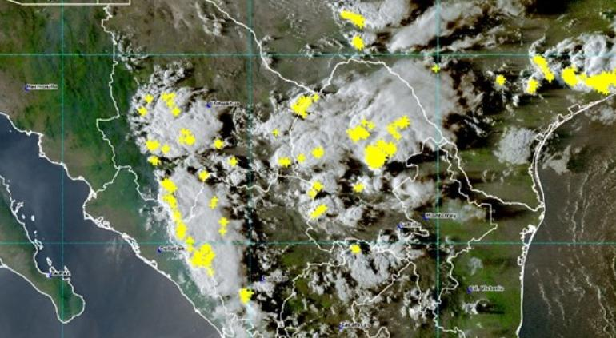
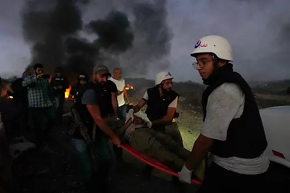
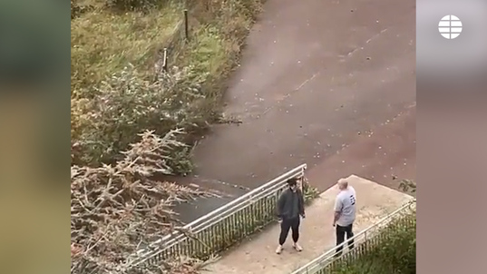

La jugadora nacida en Redding (California) ha logrado convertirse la imagen de su deporte. Con la selección estadounidense, logró el oro en los Juegos Olímpicos de 2012, fue subcampeona en el Mundial de 2011 (tras perder la final en los penaltis) y ganó los Mundiales de 2015 y 2019. En este último no solo fue la máxima goleadora, sino que también fue reconocida como la mejor jugadora en el conjunto del torneo y en tres de los partidos que disputó, incluida la final. Dejó en ella una de las imágenes más icónicas de ese periodo de dominio estadounidense, celebrando un gol de la final con los brazos extendidos y su pelo teñido de color lila. Ese mismo año fue elegida la Mejor Jugadora de 2019 por la FIFA y recibió el Balón de Oro, siendo la primera futbolista en la historia en lograr ambos galardones.

La Comisión Nacional del Agua (CONAGUA), a través del Servicio Meteorológico Nacional, ha emitido una alerta para diversas regiones del estado debido a la presencia de condiciones climáticas adversas que podrían afectar la zona durante la noche. Se esperan fuertes lluvias, descargas eléctricas, rachas de vientos y la posibilidad de granizo en diferentes regiones de la ciudad.
"En ese apretón de manos y en esas sonrisas hemos visto que Pedro Sánchez está dispuesto a pagar con indignidad" el precio de su investidura, "con tal de mantenerse en La Moncloa". La secretaria general del PP, Cuca Gamarra, ha calificado este viernes de "foto de la indignidad" la reunión de Pedro Sánchez con la portavoz parlamentaria de EH Bildu, Mertxe Aizpurua. "Hoy es un día negro para la democracia en España", ha subrayado.
El ministro de Asuntos Exteriores en funciones, José Manuel Albares, está en contacto con sus homólogos de otros países y con organizaciones humanitarias internacionales para evaluar la situación y las posibilidades para la evacuación de los españoles que están en Gaza cuando sea posible, según han informado fuentes diplomáticas.
Además, fuentes conocedoras de la situación admiten las dificultades de hacer una operación en las actuales circunstancias, al estar la zona bloqueada y sin agua ni luz. Otros países, como Estados Unidos, tampoco han podido aún evacuar a sus nacionales de Gaza.

Al menos un periodista murió y varios más resultaron heridos hoy a causa de un ataque de las fuerzas israelíes contra el sur del Líbano, donde se registra un estallido de violencia desde el pasado domingo, informó a EFE una fuente militar que pidió el anonimato.
El canal estatal catarí Al Yazira confirmó que dos de sus empleados sufrieron heridas en el ataque, perpetrado contra el vehículo en el que viajaban por el área de Alma al Shaab, y agregó que la acción "israelí" acabó con la vida de otro periodista, que no identifica.

Francia ha vuelto a ser el blanco de un ataque islamista, en plena escalada del conflicto entre israelíes y palestinos. Un profesor ha muerto apuñalado este viernes y tres personas han resultado heridas, dos de ellas graves, en un atentado perpetrado por un islamista en un instituto en Arras, en Pas-de-Calais, al norte de Francia.
El autor, identificado como Mohamed M. y detenido, es un joven de origen checheno, de 20 años, fichado por la policía por radicalización y antiguo alumno del centro. Los testigos dicen que en el momento del ataque ha gritado "Allah Akbar", según ha confirmado el fiscal antiterrorista de Arras, Jean François Ricard. Su hermano también ha sido arrestado, así como varias personas de su familia.
{kind=link}
{kind=link}
{kind=link}
{kind=link}
{kind=link}
{kind=link}